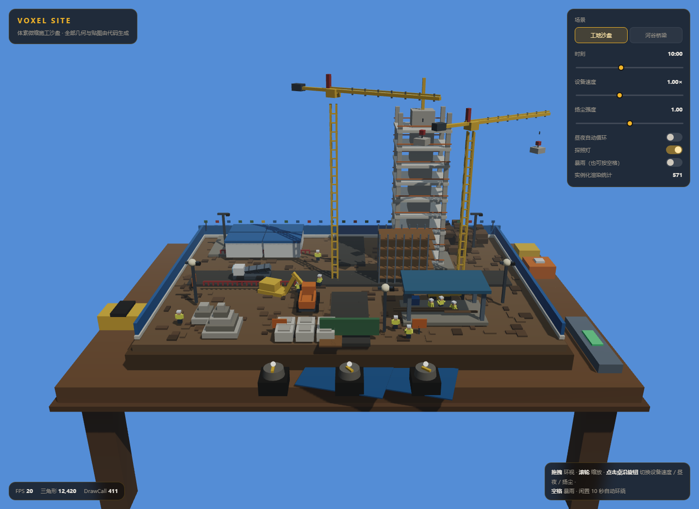

体素微缩施工沙盘（任务正文 v1）
单个 HTML 文件的体素沙盘：把一整套施工现场摆在深色实木工作桌上，可以环视、缩放、拨动桌沿的实体 旋钮、按空格切换暴雨。除 Three.js r160（CDN）外不引用任何外部资源，全部几何体、材质、贴图与粒子 均由代码生成。
任务正文最后一句是「添加新场景进去」，因此这里提供了两个场景：工地沙盘与河谷桥梁施工现场， 共用同一套昼夜、天气、粒子与交互系统。
场景一：工地沙盘
| 分区 | 内容 |
|---|---|
| 基坑开挖区 | 三级台阶放坡、坑底、四周红色护栏 |
| 钢筋加工棚 | 钢柱 + 蓝顶棚、堆叠的钢筋、弯箍机 |
| 物料堆放区 | 水泥包六件、砂石阶梯堆、模板与木方 |
| 在建高层基座 | 9 层楼板 + 核心筒剪力墙 + 外圈柱 + 橙色临边防护 |
| 临时板房办公区 | 四间板房、蓝色屋顶、发光窗户 |
| 渣土堆放区 | 随机堆叠的土方块体 |
| 临时施工道路 | 十字主干 + 两侧支路，深色沥青 |
| 围挡与门 | 蓝色围挡、绿色施工大门、26 面彩旗 |
| 细节 | 脚手架、灯杆与照明灯头、水电杆、安全警示牌 |
动态设备：挖掘机（大臂 / 小臂 / 铲斗三段往复挖掘）、轮式渣土车（沿闭合折线行驶，抵达渣土堆自动举斗卸料）、 两台塔式塔吊（回转 + 小车沿臂架往复 + 吊钩升降）、混凝土搅拌罐车（鼓体持续旋转）、小型装载机（往返平整地面）。
人物：12 名体素工人，其中 5 名沿各自路径巡逻（含上下起伏的走路节奏），7 名原地作业并摆动手臂。
场景二：河谷桥梁施工现场
河道与河岸、围堰、三个桥墩与盖梁、已架设的预制箱梁、未架设段外露的钢筋骨架、栈桥与便道、 围挡与彩旗、发电房与料场；两台塔吊 + 搅拌罐车 + 挖掘机 + 装载机 + 自卸车，另有 7 名工人。
桌面
沙盘摆在深色实木工作桌上，桌沿散落蓝图图纸、钢卷尺、安全帽摆件与金属水平仪，桌面前沿并排装着 三个实体控制旋钮（设备速度 / 昼夜循环 / 扬尘强度），旋钮指针与指示灯会跟随当前设置转动。
交互
| 操作 | 效果 |
|---|---|
| 拖拽 | 环视相机 |
| 滚轮 | 缩放（90–430） |
| 点击桌沿旋钮 | 逐档切换设备速度 / 昼夜自动循环 / 扬尘强度，指针与指示灯同步 |
| 空格或面板开关 | 暴雨：雨滴粒子 + 地面湿滑反光 + 环境光降低 |
| 闲置 10 秒 | 相机自动缓慢环绕 |
| 右侧面板 | 场景切换、时刻（0–24h）、设备速度、扬尘强度、昼夜自动循环、探照灯 |
昼夜与天气
7 个关键帧插值（深夜 / 黎明 / 上午 / 正午 / 下午 / 黄昏 / 入夜），联动天空背景、雾、环境光、 平行光（沿太阳弧线移动）、海面之外的地面色调，以及夜间自动点亮的探照灯（点光源 + 自发光灯罩） 和板房窗户。暴雨会额外压低环境光并把沥青路面的粗糙度降到 0.18、金属度提到 0.55，形成湿滑反光。
性能处理
- 静态体素按材质合并为 InstancedMesh：工地 571 个实例、桥梁 825 个实例，draw call 控制在数百级。
- 动态机械共享同一个
BoxGeometry与材质，只改变 matrix。 - 扬尘与雨各用一个
THREE.Points+ 自定义 GLSL 材质（生命周期、摇曳、圆形 alpha 都在 shader 内完成）。 - 所有车辆沿预定义折线路径行驶并按切线朝向，天然避免相互穿插；机械臂的活动范围由角度上限约束。
已知边界
- 移动设备不保证 60 FPS；面板提供的是昼夜与粒子参数，没有单独的下调画质档。
- 未使用
examples/jsm的后处理与几何工具，相机控制、实例化与粒子全部自实现。 - 地形起伏为随机方块堆叠，不是体素地形噪声算法。
- 暴雨的「湿滑反光」通过材质参数模拟，没有做屏幕空间反射。
预览截图

当前归档信息（自动生成）
- 实验 ID：
voxel-construction-site--minimax-m3-1-flash-preview-max-r01 - 模型：MiniMax M3.1 Flash Preview；推理档位：max
- 类型：single-html；预览：static；网络：required
- 完整原始输入快照 · 主题与其他版本
- 输入记录：用户指令、覆盖范围确认与任务正文 v1 原文均已完整留存。任务正文由历史归档中「任务：」之后的正文提取，模型与归档要求保留在完整原始输入里。无图片或附件。
- 工具：Claude Code（当前会话）。模型 MiniMax M3.1 Flash Preview，推理档位 max，单会话直接执行，未委派子代理。Three.js 走 CDN（unpkg 主源、jsDelivr 回退），需要联网。性能指标为无头软件渲染下的观测值，不代表真实 GPU 表现。
- 运行方式：浏览器直接打开本目录入口；CDN/外部素材需要联网。
- 体素沙盘入口
部署适配记录
- 任务正文末尾要求「添加新场景进去」，据此新增第二个场景「河谷桥梁施工现场」：河道、围堰、三个桥墩与盖梁、预制箱梁架设、栈桥便道、发电房与料场，并配套两台塔吊、搅拌罐车、挖掘机、装载机与自卸车，两个场景共用同一套昼夜、天气、粒子与旋钮系统。
- 性能：静态体素几何按材质合并为 InstancedMesh（工地场景 571 个实例、桥梁场景 825 个实例），动态机械使用共享 BoxGeometry 与共享材质；扬尘与雨各用一个 Points + 自定义 GLSL 材质。
- 交互修正：桌沿旋钮最初用 DOM click 事件绑定在 THREE.Object3D 上不会触发，改为在 canvas 的 pointerdown 中做射线拾取、pointerup 时执行拨动，并同步右侧面板状态。
- 归档来源：F:\dev\ai-coding-demo-test（model-test-base 分支）中的 demos/voxel-construction-site/runs/minimax-m3-1-flash-preview-max-r01；保留该测试轮号。
- 维护者于 2026-10-22 按 v3 对本轮桌面、手机及补充状态逐图重评并绑定 captures 证据；旧截图和 v2 评分见 catalog/score-reviews/2026-10-21-v3-source.json。未重跑模型或改写实验源码，截图不证明完整功能、算法、手势或性能。